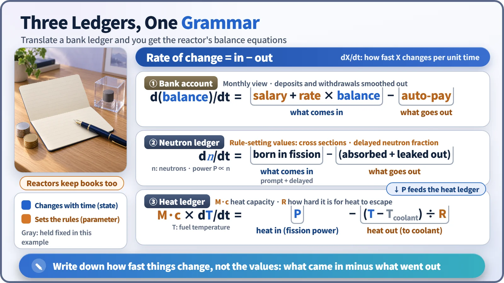
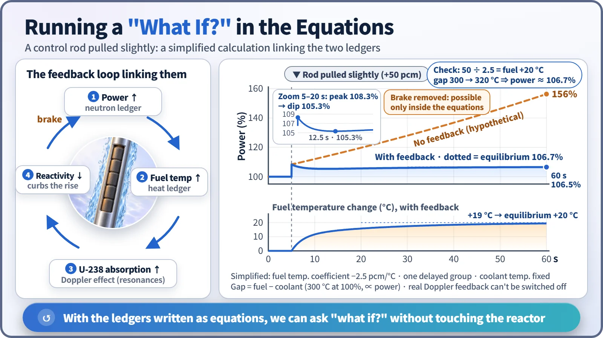

Modeling, Simulation & Computation · 252
A Reactor Keeps Books Like a Bank Account — What It Means to Write a Reactor as Equations
Rate of change equals what comes in minus what goes out. Link a neutron ledger to a heat ledger and the equations can answer what-if questions in advance.
Writing a reactor as equations means keeping balance ledgers: rate of change = what comes in − what goes out. The neutron ledger and the heat ledger are linked by feedback, and once they are written down, we can calculate "what if?" without touching the reactor. [1]
The punchline first
Write a reactor down as mathematics and the backbone is exactly one line:
Rate of change = what comes in − what goes out
The neutrons inside the core and the temperature of the hot fuel are both tracked with this one-line ledger. Let's unpack it backwards.
You already use this equation every month
How much did your bank balance change this month? Deposits minus withdrawals. If 3,000 dollars come in as salary and 3,000 dollars go out, the balance stays where it was. That doesn't mean no money moved; exactly as much went out as came in.
Physics calls this the conservation principle, or balance principle: if the amount of something has changed, it must have been created or lost somewhere. Notice that the equation records not the balance itself but how fast the balance changes. An equation that says how much something changes every second is a differential equation, which simply means a rate-of-change ledger. Most equations in reactor calculations take this form. [2]
The reactor's two ledgers
The neutron ledger: the rate of change of the number of neutrons in the core equals neutrons newly born in fission minus neutrons lost by absorption in nuclei or by leaking out of the core. When births and losses match exactly, power holds steady, the state called critical. Even then, enormous numbers of neutrons are born and lost every instant, like an account where salary and spending are equal.
The heat ledger: the fuel temperature changes by the heat produced in fission minus the heat that passes through the cladding and escapes into the cooling water. [3]

A balance and an interest rate are different kinds of numbers
Values that keep changing over time, like a balance, and that come out as the answer when you solve the equations, are state variables: in a reactor, the neutron population (and so the power), the fuel temperature, the coolant temperature.
Values that set the rules of the ledger, like a salary or an interest rate, are parameters: cross sections (the probability that a neutron reacts with a nucleus, expressed as an area), the heat capacity of the fuel (the heat needed to raise its temperature by one degree), and how easily heat escapes into the coolant. They are fixed by experiments and design calculations and treated as constant over short periods. As fuel burns for a long time they slowly change, so long-term calculations update them.
Two accounts that hold each other in check
When power rises in the neutron ledger, that power becomes the heat coming in on the heat ledger, and the fuel warms. As the fuel gets hotter, uranium-238 nuclei jiggle more vigorously and swallow neutrons of certain energies more readily: the Doppler effect. The going-out side of the neutron ledger grows, and the power rise puts on its own brakes. [4]
In bank terms, it's a rule linking your account to your card: the bigger the balance, the more automatic payments kick in, so the balance eventually stops growing. A structure in which the result reaches back and restrains the cause is called feedback. Nuclear plants are designed so that this feedback always pushes power down, and that is confirmed by calculation. [5]
With equations, you can run "what if?" in advance
Here is an example with numbers deliberately simplified for explanation. A reactor runs at 100% power and a control rod is pulled out very slightly, adding +50 pcm of reactivity (a measure of how far the reactor is from balance; 50 parts in 100,000). Solving the equations, power jumps to about 108% in the blink of an eye, sags a little, and then, as the fuel warms and the brake engages, settles at about 106.7%. It doesn't return to 100%; it finds a new balance. The fuel temperature rises by about 20 °C.
| Time (s) | 5 | 6 | 10 | 20 | 40 | 60 |
|---|---|---|---|---|---|---|
| Power with feedback (%) | 100 | 107.1 | 105.5 | 105.6 | 106.3 | 106.5 |
| Fuel temperature change (°C) | 0 | 4.2 | 11.6 | 15.8 | 18.5 | 19.4 |
| Power, feedback deleted (%) | 100 | 109.1 | 112.0 | 119.7 | 136.8 | 156.3 |
A common misconception: high reactivity does not mean high power. Reactivity is not the balance; it is more like this month's net deposit, setting the direction and speed of change. Once power has risen to 106.7%, the reactivity is back at zero.
Now ask a question that can never be tested in reality: what if there were no Doppler feedback? Delete just that term and solve again. With the same rod movement, power never stops rising and reaches about 156% just 55 seconds after the rod is moved.

The equations are a map, not the reactor itself
The equations are not a perfect copy of the reactor. The example leaves out coolant temperature changes and control systems on purpose, and the resolution of the ledgers depends on whether the whole core is treated as one lump or each location is followed separately. The core idea stays the same: record, without omission, where neutrons and heat are created and where they escape, and connect how those ledgers hold each other in check.
Key takeaways
Reactor equations are rate-of-change ledgers built on conservation. State variables are the answers, parameters set the rules, and feedback links the neutron and heat ledgers so that we can ask "what if?" before anything happens in a real plant.